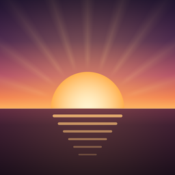
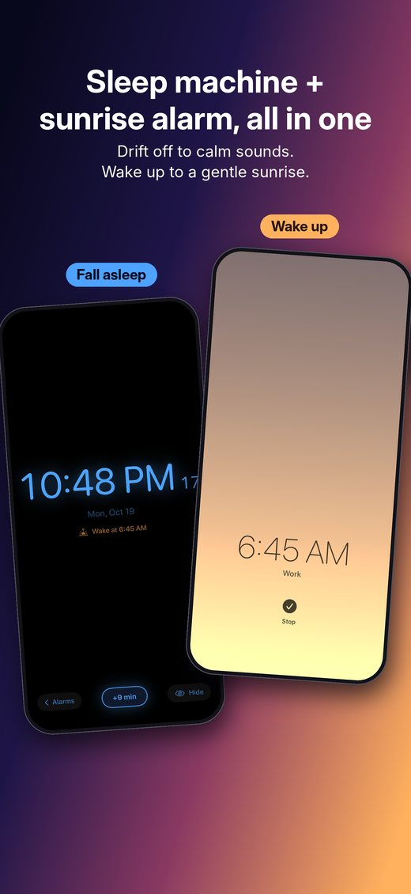
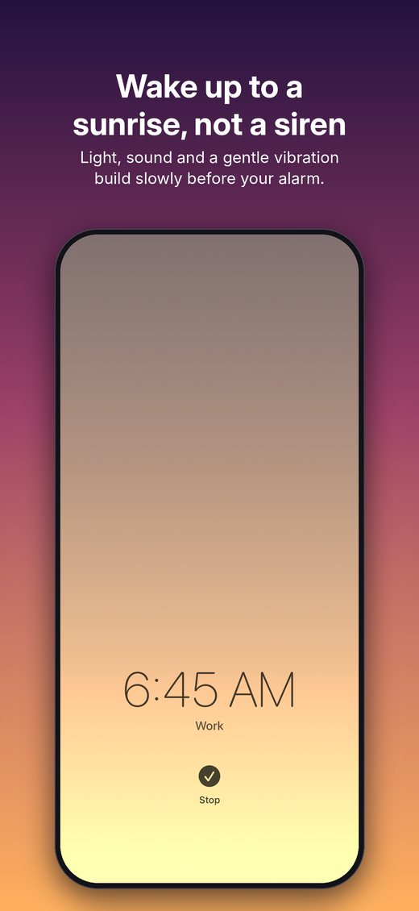
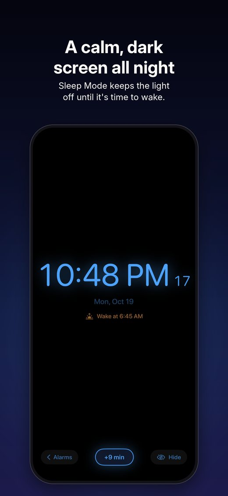
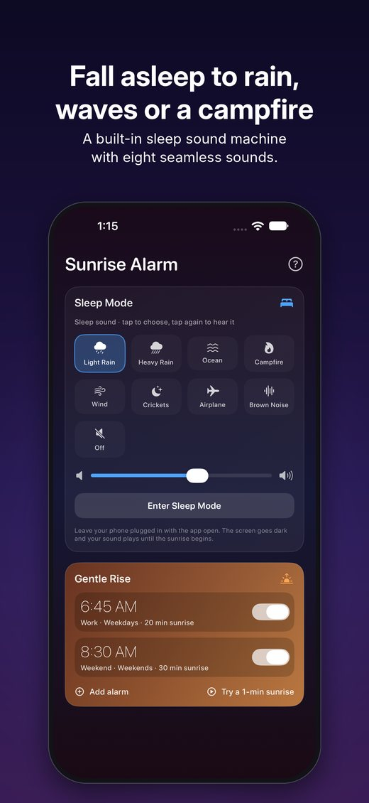
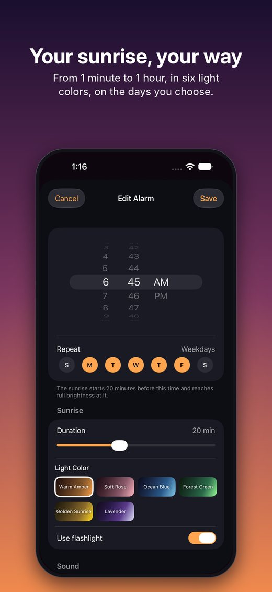

Sunrise Alarm & Sleep Sounds · for iPhoneFall asleep to calm sounds.
Wake up to a sunrise.
A sleep sound machine and a sunrise alarm clock, all in one app. Drift off to rain, ocean waves or a campfire, then wake gently as light, sound and a soft vibration rise before your alarm.

Two things your nightstand needs, in one app
Your iPhone becomes both your bedside sound machine and your wake-up light. No account, no ads, no tracking. Everything stays on your phone.
A sleep sound machine
Light and heavy rain, ocean waves, campfire, wind, night crickets, airplane cabin and brown noise, all looping seamlessly.
A sunrise alarm
Before your alarm, the screen glows from deep night to warm morning light while your wake-up sound rises from a whisper.
Built to be reliable
A soft vibration builds with the light and turns firmer at your alarm time, and a backup alarm rings if the app was closed.
A look inside
Sunrise length from 1 minute to 1 hour, six light colors, six original wake-up sounds, and an optional flashlight for extra brightness.




Simple from the very first night
There's nothing to learn.
- Set an alarmPick your wake-up time and how long the sunrise lasts.
- Tap Enter Sleep Mode at bedtimeYour sleep sound starts and the screen goes dark.
- Plug in and sleepLeave the app open on your nightstand and wake up to the sunrise.
About The Rugby Social LLC
The Rugby Social LLC is a small, independent company based in Florida. We make Sunrise Alarm & Sleep Sounds for iPhone, with every sound created in-house.
- Company
- The Rugby Social LLC
- Location
- Florida, United States
- Business
- dan@therugbysocial.com
- App support
- sunrisealarm.help@gmail.com